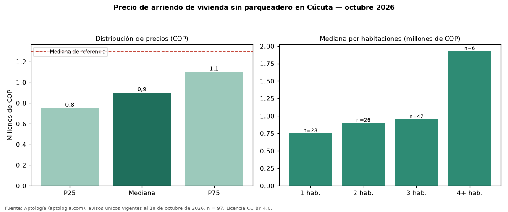

Precio de arriendo de vivienda sin parqueadero en Cúcuta — octubre 2026
COP 900.000 al mes es la mediana de arriendo de vivienda sin parqueadero en Cúcuta, según 97 avisos únicos. Frente a toda la oferta de arriendo en Cúcuta (COP 1.300.000), la diferencia es de 31 % por debajo. Frente a los avisos con parqueadero del mismo grupo (COP 1.725.000, n = 116), la diferencia es de −48 %; por metro cuadrado, −12 %. Por metro cuadrado, la mediana es COP 16.000/m² (−6 % frente a COP 16.991/m²). Cruzando con la oferta de venta equivalente, la rentabilidad bruta implícita es 7,6 % anual. Por habitaciones: 1 habitación, COP 750.000 (n = 23); 2 habitaciones, COP 900.000 (n = 26); 3 habitaciones, COP 950.000 (n = 42); 4 o más habitaciones, COP 1.925.000 (n = 6). El área mediana es 50 m² (referencia: 70 m²). Datos abiertos CC BY 4.0 de Aptología; fuente y búsqueda de inmuebles: https://www.aptologia.com/arriendo/cucuta. Archivos: PDF de 2 páginas, CSV con las cifras y gráfica PNG.

| Avisos únicos | 97 |
|---|---|
| Percentil 25 | COP 750.000 |
| Mediana | COP 900.000 |
| Percentil 75 | COP 1.100.000 |
| Mediana por m² | COP 16.000 |
Fuente: avisos vigentes de portales inmobiliarios recopilados por Aptología, deduplicados (mínimo 30 avisos únicos por celda). Precios pedidos, no cerrados. Fecha: 2026-10-18.